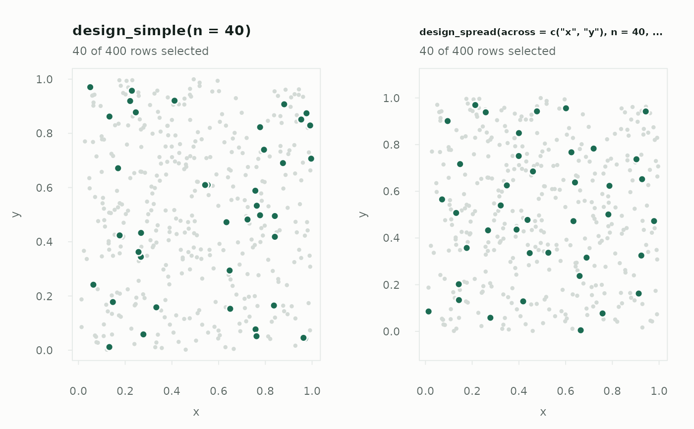

Draws a sample that is spread evenly across the space of one or more columns — map coordinates, or any numeric variables known for the whole frame — using the local pivotal method (Grafström, Lundström and Schelin 2012). Neighbouring rows compete for selection, so a sampled row makes its nearest neighbours less likely to be sampled too, and the sample avoids the clumps and gaps a simple random sample leaves behind.
Usage
design_spread(
across,
n,
size = NULL,
scale = TRUE,
na_rm = FALSE,
strata = NULL,
allocation = c("proportional", "equal"),
reserve = 0
)Arguments
- across
Column names to spread the sample across: two coordinates for a map, or any numeric auxiliary variables. At least one. A Date or date-time column, and a POINT geometry column, are read as numbers; see "Spreading over more than space".
- n
Number of rows to draw, the total across
stratawhen given, or a plan fromplan_size(). Fixed, not expected. With counts inallocationit can be left out and is their sum; when given, it must equal that sum.- size
Optional column of positive size measures. When given, rows are included with probability proportional to size —
n * size / sum(size), with rows past certainty taken whole, exactly asdesign_weighted()— and spread at the same time.- scale
Standardise each column of
acrossto unit standard deviation before measuring distance. See "Spreading over more than space".- na_rm
Drop rows with a missing value in
across,sizeorstratainstead of raising an error.- strata
Optional column name(s) defining strata, to spread the sample within each one. Several columns are cross-classified. See "Strata".
- allocation
How
nis split acrossstrata:"proportional"to each stratum's size, or"equal", by the largest-remainder method ofdesign_stratified(), with a stratum that would get more rows than it holds taken whole; or the count for each stratum, as a named vector such asc(north = 10, south = 5)whenstratais one column, or a data frame of thestratacolumns andn. Counts follow the rules ofdesign_stratified(): every stratum of the frame needs one, a count for a stratum the frame does not have is refused, and no count may exceed the rows in its stratum. Only withstrata.- reserve
Number of reserve rows to list after the main sample, to replace rows found unavailable in the field. Not available with
size,strataorn = 0. See "Reserves".
Value
A design object, for use with draw().
Details
The inclusion probabilities are exactly the ones asked for — n / N for
every row, or proportional to size — so the sample is estimable in the
usual way. What changes is which combinations of rows can occur: samples
that bunch up in one corner become rare. When what you measure varies
smoothly across the space, as most environmental, geographic and
operational quantities do, that is worth a large reduction in variance at no
extra cost.
Why this, and not a region
design_spatial() restricts a simple random sample to a polygon; it decides
where sampling happens, not how evenly. design_spread() decides how
evenly, and needs no polygon or sf — only the columns to spread across. The
two compose naturally: filter the frame to your region first, then spread.
Spreading over more than space
Nothing requires the columns to be coordinates. Spreading across auxiliary
variables that predict the outcome — last year's value, size, age — balances
the sample on them the way stratification would, without choosing strata
boundaries (Grafström and Schelin 2014). With scale = TRUE, the default,
each column is standardised first so that one measured in larger units does
not decide the distances alone; set scale = FALSE for coordinates that
already share a unit, such as projected metres.
A Date column in across counts in days and a date-time (POSIXct) column
in seconds since 1970, so time can be spread over alongside space. Keep
scale = TRUE when mixing them with coordinates, or the column in the
larger unit decides the distances. size has to be numeric.
A POINT geometry column, such as the geometry of an sf frame, counts as
its two coordinates, read with sf::st_coordinates(): across = "geometry" spreads over the map. Distances are measured in the
geometry's own units, so longitude and latitude are treated as plain
numbers; a projected CRS gives distances in metres.
Variance
The joint inclusion probabilities of a pivotal design have no closed form,
and treating the sample as simple random would give away exactly the gain
the spreading bought. ht_total() and ht_mean() instead use the local
mean variance estimator (Stevens and Olsen 2003; Grafström and Schelin
2014), which compares each sampled row with the mean of itself and its three
nearest sampled neighbours. It is an approximation, reported as
method = "local mean", and usually overstates the variance. The table
gives the ratio of its average to the true variance of the total, over
1,000 draws from one frame per cell, by n and the sampling fraction
f = n / N. The frames are uniform on the unit square, spread with
scale = FALSE; the smooth surface is the one in the examples, and the
other variable is normal noise unrelated to position.
| Variable | n | f = 0.05 | 0.2 | 0.5 | 0.8 |
| smooth surface | 8 | 2.2 | 2.5 | 2.3 | 3.6 |
| 20 | 1.6 | 1.5 | 2.3 | 1.4 | |
| 40 | 1.1 | 1.3 | 1.9 | 2.1 | |
| unrelated to position | 8 | 1.0 | 1.4 | 1.8 | 4.7 |
| 20 | 1.0 | 1.2 | 1.8 | 4.5 | |
| 40 | 1.0 | 1.3 | 1.9 | 4.9 |
For a variable unrelated to position the ratio is close to 1 / (1 - f),
since the estimator then reduces to the with-replacement variance of a
simple random sample. It also varies from frame to frame: with n = 20
and f = 0.05, four frames of 400 rows gave 0.96 to 1.15 for that
variable and 1.36 to 1.52 for the smooth surface, so a ratio slightly
below 1 occurs too. Below about 10 sampled rows the ratio climbs: n = 4
gave 2.4 for the smooth surface at f = 0.05, and 18.9 on a frame of 8
rows.
deff() divides this variance by a simple random sample's, so it carries
the same overstatement: at a ratio of 2, a spread sample with a true design
effect of 0.8 reports 1.6, worse than a simple random sample when it is
better. Rows taken with certainty, because their size puts them past it
or because n is the whole frame, are in every sample and add no variance,
so the estimator leaves them out.
Strata
With strata, n is split over the strata as design_stratified()
splits it, by allocation, and each stratum is then spread on its own, as
if it were a frame of its own: scale standardises the columns within the
stratum, size sets probabilities proportional to size within it, and a
row competes only with rows of its own stratum. inclusion_prob() gives
n_h / N_h within stratum h, or n_h * p_i with size, exactly.
The strata are drawn independently, so ht_total() and ht_mean() add up
the local mean variance of each stratum, and the degrees of freedom are
the sampled rows below certainty less the strata that hold them. A stratum
with one sampled row below certainty has no neighbour to compare it with,
and the variance is refused with the stratum named, as a stratified
sample's is; draw at least two rows in every stratum. as_svydesign()
hands the strata to survey, allocation_table() shows the split before
anything is drawn, and sample_summary() lists the rows drawn from each
stratum.
Drawing each stratum with a design of its own and binding the samples with
rbind() does not give a sample to estimate from. The bound sample keeps
the first draw's frame and design, so ht_total() refuses it; use
strata instead.
Reserves
reserve lists that many more rows after the main sample, to visit in
place of rows found unavailable in the field, as design_simple() does.
The reserves are a second spread sample, of reserve rows at equal
probability from the rows the main sample left, so they cover the space
as evenly as the main sample does, and they come in random order.
draw() returns the main sample in frame order followed by the reserves,
with an integer .reserve column: 0 for the main sample, and 1, 2, ...
for the reserves, in the order they are used. The main sample is the one
the design without reserve draws with the same seed.
use_reserves() takes the list and what the visits found, and returns
the sample to estimate from. It weights the rows used as a spread sample
of n from the frame without the u rows found unavailable, at
probability n / (N - u). That is the average of the rows' probabilities,
not each row's own, so the weights are an approximation. The variance is
the local mean estimator, as for any spread sample. Only an unstratified
design without size, whose rows all have probability n / N, takes
reserve.
Cost
Each step finds a nearest neighbour among the rows still undecided, so the
draw takes time proportional to N^2: under a second for 5,000 rows, and
several seconds at 20,000. With strata, the walk runs within each
stratum and the time grows with the square of each stratum's size: 20,000
rows in four strata of 5,000 took under a third of the time they took as
one frame. For much larger frames, use strata, or thin the frame first.
References
Deville, J.-C. and Tillé, Y. (1998). Unequal probability sampling without replacement through a splitting method. Biometrika, 85, 89–101.
Grafström, A., Lundström, N. L. P. and Schelin, L. (2012). Spatially balanced sampling through the pivotal method. Biometrics, 68, 514–520.
Grafström, A. and Schelin, L. (2014). How to select representative samples. Scandinavian Journal of Statistics, 41, 277–290.
Stevens, D. L. and Olsen, A. R. (2003). Variance estimation for spatially balanced samples of environmental resources. Environmetrics, 14, 593–610.
Stevens, D. L. and Olsen, A. R. (2004). Spatially balanced sampling of natural resources. Journal of the American Statistical Association, 99, 262–278.
See also
draw(), design_spatial() to restrict sampling to a region,
design_weighted() for size-proportional selection without spreading,
design_stratified() for the allocation rules, allocation_table(),
use_reserves().
Other designs:
design_bootstrap(),
design_certainty(),
design_cluster(),
design_multistage(),
design_reservoir(),
design_simple(),
design_spatial(),
design_stratified(),
design_systematic(),
design_temporal(),
design_weighted()
Examples
set.seed(1)
plots <- data.frame(x = stats::runif(400), y = stats::runif(400))
# Something that varies smoothly over the map
plots$biomass <- 100 + 80 * plots$x + 60 * sin(4 * plots$y) +
stats::rnorm(400, 0, 10)
spread <- design_spread(c("x", "y"), n = 40, scale = FALSE)
s <- draw(plots, spread, seed = 1, weights = TRUE)
ht_total(s, "biomass")
#> Horvitz-Thompson total (spread design, n = 40)
#> estimate 65,956.1
#> se 916.2289 (local mean, an approximation)
#> 95% CI 64,102.85 to 67,809.35 (t, 39 df)
#> deff 0.141 (better than simple random sampling)
#>
#> Local mean approximation for a spatially balanced sample: the local
#> pivotal method has no closed-form joint inclusion probabilities.
sum(plots$biomass) # the truth
#> [1] 65207.85
# The same total from a simple random sample: a wider interval
ht_total(draw(plots, design_simple(n = 40), seed = 1, weights = TRUE),
"biomass")
#> Horvitz-Thompson total (simple design, n = 40)
#> estimate 67,061.07
#> se 2,756.529 (analytic)
#> 95% CI 61,485.46 to 72,636.68 (t, 39 df)
#> deff 1 (about the same as simple random sampling)
# See the difference: spread points avoid each other
op <- par(mfrow = c(1, 2))
plot(design_simple(n = 40), plots, type = "map", coords = c("x", "y"),
seed = 1)
plot(spread, plots, type = "map", seed = 1)

par(op)
# Spread within two regions, each given rows in proportion to its size
plots$region <- ifelse(plots$x < 0.5, "west", "east")
by_region <- design_spread(c("x", "y"), n = 40, scale = FALSE,
strata = "region")
allocation_table(plots, by_region)
#> region N n prob sd cost status
#> 1 east 183 18 0.09836066 NA NA rule
#> 2 west 217 22 0.10138249 NA NA rule
ht_total(draw(plots, by_region, seed = 1, weights = TRUE), "biomass")
#> Horvitz-Thompson total (spread design, n = 40)
#> estimate 65,294.05
#> se 985.0699 (local mean, an approximation)
#> 95% CI 63,299.88 to 67,288.22 (t, 38 df)
#> deff 0.19 (better than simple random sampling)
#>
#> Local mean approximation for a spatially balanced sample, summed over
#> strata: the local pivotal method has no closed-form joint inclusion
#> probabilities.